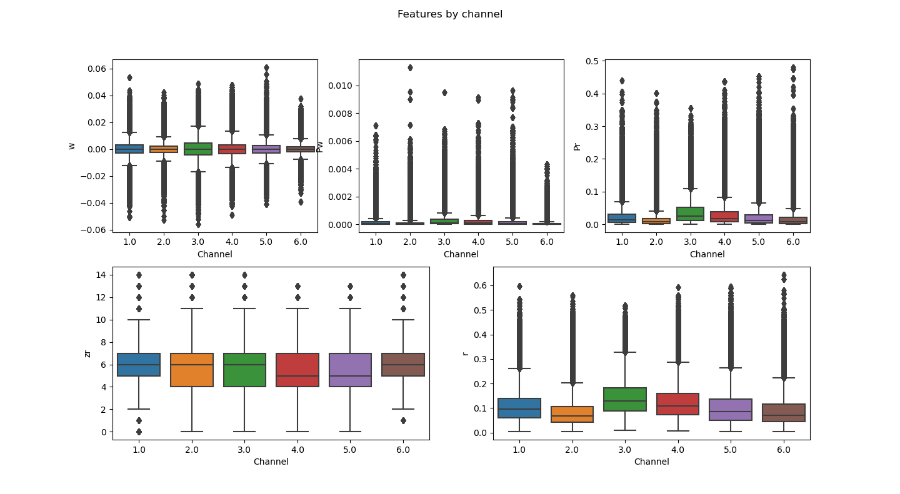

datasetManipulation module
Functions
- datasetManipulation.getPhoneDict(scriptPath)
This function loads a dictionary that links each label number with its corresponding phoneme. The dictionary is loaded from a text file named
phoneMap, that it must have been created in previous steps into the script folder.- Parameters
scriptPath (str) – The path to the folder where the phoneMap file is saved.
- Returns
The dictionary that links each numeric label with its corresponding phoneme.
- Return type
dict
Let’s suppose the
phoneMapfile is as follows:no_label -1 AA 0 AE 1 AH 2 AO 3 AW 4 AY 5 B 6 CH 7 D 8 DH 9
Example of use:
>>> import datasetManipulation >>> import os >>> scriptPath = os.getcwd() >>> phoneDict = datasetManipulation.getPhoneDict(scriptPath) >>> for key in phoneDict.keys(): ... print(f"Label: {key}\t Phoneme: {phoneDict[key]}") Label: -1 Phoneme: no_label Label: 0 Phoneme: AA Label: 1 Phoneme: AE Label: 2 Phoneme: AH Label: 3 Phoneme: AO Label: 4 Phoneme: AW Label: 5 Phoneme: AY Label: 6 Phoneme: B Label: 7 Phoneme: CH Label: 8 Phoneme: D Label: 9 Phoneme: DH
- datasetManipulation.removeNaN(batch)
This function removes the examples that contains any NaN value in its features.
- Parameters
batch (numpy.ndarray) – A numpy matrix. The first column corresponds to the labls and the rest of the columns correspond to features.
- Return type
tuple
- Returns
(batch, removedExamples)
batch (numpy.ndarray) - It’s a numpy matrix. The batch passed as input, without the examples removed into the function.
removedExamples (int) - The number of examples that have been removed.
Example of use:
>>> import datasetManipulation >>> import numpy as np >>> phoneDict = datasetManipulation.getPhoneDict(scriptPath) >>> batch = np.load('batch.npy') >>> True in np.isnan(batch) True >>> batch, removedExamples = datasetManipulation.removeNaN(batch) >>> True in np.isnan(batch) False >>> print(f"Removed examples: {removedExamples}.") Removed examples: 4200.
In the example there were 4200 examples that contained any
NaNvalue among their features, and they were removed by the function.
- datasetManipulation.removeOutliers(batch[, nu=0.2])
This function uses the
sklearn.svm.OneClassSVM()function to detect outliers and remove them.Warning
This function have not be proben to remove the outlier in an effective way.
- Parameters
batch (numpy.ndarray) – A numpy matrix. The first column corresponds to the labls and the rest of the columns correspond to features.
nu (float, default=0.2) – An upper bound on the fraction of training errors and a lower bound of the fraction of support vectors. Should be in the interval (0, 1]. By default 0.2 will be taken.
- Return type
numpy.ndarray
- Returns
The batch passed as input, without the examples removed into the function.
Example of use:
>>> import datasetManipulation >>> import numpy as np >>> batch = np.load('batch.npy') >>> batch = datasetManipulation.removeNaN(batch)[0] >>> np.shape(batch) (105263, 931) >>> batch = datasetManipulation.removeOutliers(batch,nu=0.4) >>> np.shape(batch) # The 40% of the samples have been discarded (63158, 931)
- datasetManipulation.removeSimplePhonemes(batch, phoneDict[, reduceLabels=True])
This function removes the examples labeled with simple phonemes or silences.
- Parameters
batch (numpy.ndarray) – A numpy matrix. The first column corresponds to the labls and the rest of the columns correspond to features.
phoneDict (dict) – A dictionary that saves the relations between the name of the label and the number assigned to it. The keys are the numbers corresponding to the labels and the returned values are the labels as strings.
reduceLabels (bool) – If it’s set to
True, the labels with ‘-’ are changed for the label of the same phoneme transition but with sign ‘+’ (that shold be the previous label in the map, so it’s the previous number). That way, transitions are no considered to have two parts (A+BandA-B), but only one label for the same transition (A+B).
- Return type
tuple
- Returns
(batch, removedExamples)
batch (numpy.ndarray) - The batch passed as input, without the examples removed into the function.
removedExamples (int) - The number of examples that have been removed.
Example of use:
>>> import datasetManipulation >>> import featureSelectionProbe >>> import numpy as np >>> phoneDict = datasetManipulation.getPhoneDict(scriptPath) >>> batch = np.load('batch.npy') >>> batch = datasetManipulation.removeNaN(batch)[0] >>> uniqueLabels = featureSelectionProbe.getUniqueLabels(batch[:,0]) >>> uniquePhonemes = [phoneDict[label] for label in uniqueLabels] >>> print(uniquePhonemes) ['AA', 'AE', 'AH', 'AO', 'AW', 'AY', 'B', 'CH', 'D', 'DH', 'EH', 'ER', 'EY', 'F', 'G', 'HH', 'IH', 'IY', 'JH', 'K', 'L', 'M', 'N', 'NG', 'OW', 'OY', 'P', 'R', 'S', 'SH', 'T', 'TH', 'UW', 'V', 'W', 'Y', 'Z', 'ZH', 'sil', 'sp', 'AA+B', 'AA-B', 'AA+JH', 'AA-JH', 'AA+L', 'AA-L', 'AA+N', 'AA-N', 'AA+R', 'AA-R', 'AA+T', 'AA-T', 'AA+Z', 'AA-Z', 'AA+ZH', 'AA-ZH', 'AE+B', 'AE-B', 'AE+K', 'AE-K', 'AE+L', 'AE-L', 'AE+M', 'AE-M', 'AE+N', 'AE-N', 'AE+T', 'AE-T', 'AE+Z', 'AE-Z', 'AH+AW', 'AH-AW', 'AH+B', 'AH-B', 'AH+D', 'AH-D', 'AH+F', 'AH-F', 'AH+G', 'AH-G', 'AH+HH', 'AH-HH', 'AH+JH', 'AH-JH', 'AH+K', 'AH-K', 'AH+L', 'AH-L', 'AH+M', 'AH-M', 'AH+N', 'AH-N', 'AH+P', 'AH-P', 'AH+S', 'AH-S', 'AH+T', 'AH-T', 'AH+V', 'AH-V', 'AH+Z', 'AH-Z', 'AH+sp', 'AH-sp', 'AO+NG', 'AO-NG', 'AO+R', 'AO-R', 'AO+Z', 'AO-Z', 'AW+N', 'AW-N', 'AW+T', 'AW-T', 'AY+L', 'AY-L', 'AY+S', 'AY-S', 'AY+Z', 'AY-Z', 'B+AH', 'B-AH', 'B+AY', 'B-AY', 'B+ER', 'B-ER', 'B+L', 'B-L', 'B+Y', 'B-Y', 'CH+EY', 'CH-EY', 'D+AH', 'D-AH', 'D+B', 'D-B', 'D+EH', 'D-EH', 'D+ER', 'D-ER', 'D+HH', 'D-HH', 'D+IH', 'D-IH', 'D+M', 'D-M', 'D+S', 'D-S', 'D+UW', 'D-UW', 'D+sp', 'D-sp', 'DH+AE', 'DH-AE', 'DH+AH', 'DH-AH', 'DH+EY', 'DH-EY', 'DH+IY', 'DH-IY', 'EH+K', 'EH-K', 'EH+L', 'EH-L', 'EH+M', 'EH-M', 'EH+N', 'EH-N', 'EH+R', 'EH-R', 'EH+T', 'EH-T', 'ER+AE', 'ER-AE', 'ER+AH', 'ER-AH', 'ER+D', 'ER-D', 'ER+DH', 'ER-DH', 'ER+EH', 'ER-EH', 'ER+HH', 'ER-HH', 'ER+K', 'ER-K', 'ER+N', 'ER-N', 'ER+R', 'ER-R', 'ER+V', 'ER-V', 'ER+Z', 'ER-Z', 'ER+sp', 'ER-sp', 'EY+IY', 'EY-IY', 'EY+JH', 'EY-JH', 'EY+K', 'EY-K', 'EY+L', 'EY-L', 'EY+N', 'EY-N', 'EY+S', 'EY-S', 'EY+T', 'EY-T', 'EY+W', 'EY-W', 'F+AA', 'F-AA', 'F+AO', 'F-AO', 'F+EH', 'F-EH', 'F+EY', 'F-EY', 'F+L', 'F-L', 'F+P', 'F-P', 'F+sp', 'F-sp', 'G+AA', 'G-AA', 'G+EH', 'G-EH', 'G+ER', 'G-ER', 'G+EY', 'G-EY', 'HH+AE', 'HH-AE', 'HH+AH', 'HH-AH', 'HH+EH', 'HH-EH', 'HH+IY', 'HH-IY', 'IH+D', 'IH-D', 'IH+DH', 'IH-DH', 'IH+G', 'IH-G', 'IH+JH', 'IH-JH', 'IH+K', 'IH-K', 'IH+M', 'IH-M', 'IH+N', 'IH-N', 'IH+NG', 'IH-NG', 'IH+P', 'IH-P', 'IH+S', 'IH-S', 'IH+T', 'IH-T', 'IH+TH', 'IH-TH', 'IH+V', 'IH-V', 'IH+Z', 'IH-Z', 'IY+AH', 'IY-AH', 'IY+AW', 'IY-AW', 'IY+D', 'IY-D', 'IY+K', 'IY-K', 'IY+L', 'IY-L', 'IY+M', 'IY-M', 'IY+P', 'IY-P', 'IY+S', 'IY-S', 'IY+T', 'IY-T', 'IY+V', 'IY-V', 'IY+W', 'IY-W', 'IY+Y', 'IY-Y', 'IY+sp', 'IY-sp', 'JH+AH', 'JH-AH', 'JH+ER', 'JH-ER', 'JH+IH', 'JH-IH', 'K+AA', 'K-AA', 'K+AH', 'K-AH', 'K+AO', 'K-AO', 'K+EH', 'K-EH', 'K+ER', 'K-ER', 'K+R', 'K-R', 'K+S', 'K-S', 'K+T', 'K-T', 'K+Y', 'K-Y', 'L+AA', 'L-AA', 'L+AH', 'L-AH', 'L+AO', 'L-AO', 'L+D', 'L-D', 'L+F', 'L-F', 'L+IY', 'L-IY', 'L+M', 'L-M', 'L+OW', 'L-OW', 'L+TH', 'L-TH', 'L+UW', 'L-UW', 'L+Y', 'L-Y', 'L+Z', 'L-Z', 'M+AE', 'M-AE', 'M+AH', 'M-AH', 'M+AO', 'M-AO', 'M+AW', 'M-AW', 'M+B', 'M-B', 'M+EH', 'M-EH', 'M+ER', 'M-ER', 'M+EY', 'M-EY', 'M+F', 'M-F', 'M+IH', 'M-IH', 'M+P', 'M-P', 'M+W', 'M-W', 'M+Z', 'M-Z', 'M+sp', 'M-sp', 'N+AA', 'N-AA', 'N+AH', 'N-AH', 'N+B', 'N-B', 'N+D', 'N-D', 'N+EH', 'N-EH', 'N+F', 'N-F', 'N+IH', 'N-IH', 'N+IY', 'N-IY', 'N+JH', 'N-JH', 'N+K', 'N-K', 'N+OW', 'N-OW', 'N+S', 'N-S', 'N+T', 'N-T', 'N+UW', 'N-UW', 'N+V', 'N-V', 'N+Y', 'N-Y', 'N+Z', 'N-Z', 'N+sp', 'N-sp', 'NG+DH', 'NG-DH', 'NG+ER', 'NG-ER', 'NG+G', 'NG-G', 'NG+IH', 'NG-IH', 'NG+R', 'NG-R', 'NG+TH', 'NG-TH', 'NG+sp', 'NG-sp', 'OW+L', 'OW-L', 'OW+Z', 'OW-Z', 'OY+D', 'OY-D', 'P+AA', 'P-AA', 'P+EH', 'P-EH', 'P+ER', 'P-ER', 'P+IY', 'P-IY', 'P+R', 'P-R', 'P+Y', 'P-Y', 'R+AA', 'R-AA', 'R+AE', 'R-AE', 'R+AH', 'R-AH', 'R+AO', 'R-AO', 'R+DH', 'R-DH', 'R+EH', 'R-EH', 'R+IH', 'R-IH', 'R+IY', 'R-IY', 'R+T', 'R-T', 'R+V', 'R-V', 'R+sp', 'R-sp', 'S+AE', 'S-AE', 'S+AH', 'S-AH', 'S+CH', 'S-CH', 'S+D', 'S-D', 'S+EY', 'S-EY', 'S+IH', 'S-IH', 'S+IY', 'S-IY', 'S+T', 'S-T', 'S+sp', 'S-sp', 'SH+AH', 'SH-AH', 'T+AA', 'T-AA', 'T+AE', 'T-AE', 'T+AH', 'T-AH', 'T+AO', 'T-AO', 'T+DH', 'T-DH', 'T+EH', 'T-EH', 'T+ER', 'T-ER', 'T+EY', 'T-EY', 'T+F', 'T-F', 'T+IH', 'T-IH', 'T+IY', 'T-IY', 'T+K', 'T-K', 'T+L', 'T-L', 'T+R', 'T-R', 'T+S', 'T-S', 'T+UW', 'T-UW', 'T+W', 'T-W', 'T+sp', 'T-sp', 'TH+AH', 'TH-AH', 'TH+K', 'TH-K', 'TH+R', 'TH-R', 'TH+sp', 'TH-sp', 'UW+B', 'UW-B', 'UW+DH', 'UW-DH', 'UW+IH', 'UW-IH', 'UW+K', 'UW-K', 'UW+M', 'UW-M', 'UW+P', 'UW-P', 'UW+SH', 'UW-SH', 'UW+T', 'UW-T', 'V+AE', 'V-AE', 'V+AY', 'V-AY', 'V+EH', 'V-EH', 'V+F', 'V-F', 'V+IH', 'V-IH', 'V+K', 'V-K', 'V+OY', 'V-OY', 'V+W', 'V-W', 'W+AH', 'W-AH', 'W+EH', 'W-EH', 'W+ER', 'W-ER', 'W+IH', 'W-IH', 'Y+AH', 'Y-AH', 'Y+ER', 'Y-ER', 'Y+UW', 'Y-UW', 'Z+AA', 'Z-AA', 'Z+AE', 'Z-AE', 'Z+AH', 'Z-AH', 'Z+D', 'Z-D', 'Z+ER', 'Z-ER', 'Z+IH', 'Z-IH', 'Z+OW', 'Z-OW', 'Z+S', 'Z-S', 'Z+T', 'Z-T', 'Z+W', 'Z-W', 'Z+sp', 'Z-sp', 'sil+DH', 'sil-DH', 'sil+EY', 'sil-EY', 'sil+HH', 'sil-HH', 'sil+M', 'sil-M', 'sil+W', 'sil-W', 'sil+Y', 'sil-Y', 'sp+AA', 'sp-AA', 'sp+AE', 'sp-AE', 'sp+AH', 'sp-AH', 'sp+B', 'sp-B', 'sp+CH', 'sp-CH', 'sp+DH', 'sp-DH', 'sp+EH', 'sp-EH', 'sp+IH', 'sp-IH', 'sp+K', 'sp-K', 'sp+N', 'sp-N', 'sp+P', 'sp-P', 'sp+R', 'sp-R', 'sp+S', 'sp-S', 'sp+T', 'sp-T', 'sp+W', 'sp-W'] >>> batch, removedExamples = datasetManipulation.removeSimplePhonemes(batch,phoneDict) >>> uniqueLabels = featureSelectionProbe.getUniqueLabels(batch[:,0]) >>> uniquePhonemes = [phoneDict[label] for label in uniqueLabels] >>> print(uniquePhonemes) ['AA+B', 'AA+JH', 'AA+L', 'AA+N', 'AA+R', 'AA+T', 'AA+Z', 'AA+ZH', 'AE+B', 'AE+K', 'AE+L', 'AE+M', 'AE+N', 'AE+T', 'AE+Z', 'AH+AW', 'AH+B', 'AH+D', 'AH+F', 'AH+G', 'AH+HH', 'AH+JH', 'AH+K', 'AH+L', 'AH+M', 'AH+N', 'AH+P', 'AH+S', 'AH+T', 'AH+V', 'AH+Z', 'AH+sp', 'AO+NG', 'AO+R', 'AO+Z', 'AW+N', 'AW+T', 'AY+L', 'AY+S', 'AY+Z', 'B+AH', 'B+AY', 'B+ER', 'B+L', 'B+Y', 'CH+EY', 'D+AH', 'D+B', 'D+EH', 'D+ER', 'D+HH', 'D+IH', 'D+M', 'D+S', 'D+UW', 'D+sp', 'DH+AE', 'DH+AH', 'DH+EY', 'DH+IY', 'EH+K', 'EH+L', 'EH+M', 'EH+N', 'EH+R', 'EH+T', 'ER+AE', 'ER+AH', 'ER+D', 'ER+DH', 'ER+EH', 'ER+HH', 'ER+K', 'ER+N', 'ER+R', 'ER+V', 'ER+Z', 'ER+sp', 'EY+IY', 'EY+JH', 'EY+K', 'EY+L', 'EY+N', 'EY+S', 'EY+T', 'EY+W', 'F+AA', 'F+AO', 'F+EH', 'F+EY', 'F+L', 'F+P', 'F+sp', 'G+AA', 'G+EH', 'G+ER', 'G+EY', 'HH+AE', 'HH+AH', 'HH+EH', 'HH+IY', 'IH+D', 'IH+DH', 'IH+G', 'IH+JH', 'IH+K', 'IH+M', 'IH+N', 'IH+NG', 'IH+P', 'IH+S', 'IH+T', 'IH+TH', 'IH+V', 'IH+Z', 'IY+AH', 'IY+AW', 'IY+D', 'IY+K', 'IY+L', 'IY+M', 'IY+P', 'IY+S', 'IY+T', 'IY+V', 'IY+W', 'IY+Y', 'IY+sp', 'JH+AH', 'JH+ER', 'JH+IH', 'K+AA', 'K+AH', 'K+AO', 'K+EH', 'K+ER', 'K+R', 'K+S', 'K+T', 'K+Y', 'L+AA', 'L+AH', 'L+AO', 'L+D', 'L+F', 'L+IY', 'L+M', 'L+OW', 'L+TH', 'L+UW', 'L+Y', 'L+Z', 'M+AE', 'M+AH', 'M+AO', 'M+AW', 'M+B', 'M+EH', 'M+ER', 'M+EY', 'M+F', 'M+IH', 'M+P', 'M+W', 'M+Z', 'M+sp', 'N+AA', 'N+AH', 'N+B', 'N+D', 'N+EH', 'N+F', 'N+IH', 'N+IY', 'N+JH', 'N+K', 'N+OW', 'N+S', 'N+T', 'N+UW', 'N+V', 'N+Y', 'N+Z', 'N+sp', 'NG+DH', 'NG+ER', 'NG+G', 'NG+IH', 'NG+R', 'NG+TH', 'NG+sp', 'OW+L', 'OW+Z', 'OY+D', 'P+AA', 'P+EH', 'P+ER', 'P+IY', 'P+R', 'P+Y', 'R+AA', 'R+AE', 'R+AH', 'R+AO', 'R+DH', 'R+EH', 'R+IH', 'R+IY', 'R+T', 'R+V', 'R+sp', 'S+AE', 'S+AH', 'S+CH', 'S+D', 'S+EY', 'S+IH', 'S+IY', 'S+T', 'S+sp', 'SH+AH', 'T+AA', 'T+AE', 'T+AH', 'T+AO', 'T+DH', 'T+EH', 'T+ER', 'T+EY', 'T+F', 'T+IH', 'T+IY', 'T+K', 'T+L', 'T+R', 'T+S', 'T+UW', 'T+W', 'T+sp', 'TH+AH', 'TH+K', 'TH+R', 'TH+sp', 'UW+B', 'UW+DH', 'UW+IH', 'UW+K', 'UW+M', 'UW+P', 'UW+SH', 'UW+T', 'V+AE', 'V+AY', 'V+EH', 'V+F', 'V+IH', 'V+K', 'V+OY', 'V+W', 'W+AH', 'W+EH', 'W+ER', 'W+IH', 'Y+AH', 'Y+ER', 'Y+UW', 'Z+AA', 'Z+AE', 'Z+AH', 'Z+D', 'Z+ER', 'Z+IH', 'Z+OW', 'Z+S', 'Z+T', 'Z+W', 'Z+sp', 'sil+DH', 'sil+EY', 'sil+HH', 'sil+M', 'sil+W', 'sil+Y', 'sp+AA', 'sp+AE', 'sp+AH', 'sp+B', 'sp+CH', 'sp+DH', 'sp+EH', 'sp+IH', 'sp+K', 'sp+N', 'sp+P', 'sp+R', 'sp+S', 'sp+T', 'sp+W'] >>> print(f"Removed examples: {removedExamples}.") Removed examples: 74778.
In this example, a phoneDict has been loaded with
datasetManipulation.getPhoneDict(), a batch has been loaded from anumpyfile. Then, the examples of the batch that contained aNaNvalue have been discarded withdatasetManipulation.removeNaN(), a list of the labels that are present in the batch has been obtained with thefeatureSelectionProbe.getUniqueLabels()and the labels have been translated to their names. Later, thedatasetManipulation.removeSimplePhonemes()have been used to remove the simple phonemes and the silences, and also to reduce the transition labels. The list of the labels present into the batch have been obtained again, to make noticeable what labels have been removed by the function.To make clear what is the utility of the
reduceLabelsparameter, next is presented the same procedure, but setting that parameter toFalse:>>> import datasetManipulation >>> import featureSelectionProbe >>> import numpy as np >>> phoneDict = datasetManipulation.getPhoneDict(scriptPath) >>> batch = np.load('batch.npy') >>> batch = datasetManipulation.removeNaN(batch)[0] >>> uniqueLabels = featureSelectionProbe.getUniqueLabels(batch[:,0]) >>> uniquePhonemes = [phoneDict[label] for label in uniqueLabels] >>> print(uniquePhonemes) ['AA', 'AE', 'AH', 'AO', 'AW', 'AY', 'B', 'CH', 'D', 'DH', 'EH', 'ER', 'EY', 'F', 'G', 'HH', 'IH', 'IY', 'JH', 'K', 'L', 'M', 'N', 'NG', 'OW', 'OY', 'P', 'R', 'S', 'SH', 'T', 'TH', 'UW', 'V', 'W', 'Y', 'Z', 'ZH', 'sil', 'sp', 'AA+B', 'AA-B', 'AA+JH', 'AA-JH', 'AA+L', 'AA-L', 'AA+N', 'AA-N', 'AA+R', 'AA-R', 'AA+T', 'AA-T', 'AA+Z', 'AA-Z', 'AA+ZH', 'AA-ZH', 'AE+B', 'AE-B', 'AE+K', 'AE-K', 'AE+L', 'AE-L', 'AE+M', 'AE-M', 'AE+N', 'AE-N', 'AE+T', 'AE-T', 'AE+Z', 'AE-Z', 'AH+AW', 'AH-AW', 'AH+B', 'AH-B', 'AH+D', 'AH-D', 'AH+F', 'AH-F', 'AH+G', 'AH-G', 'AH+HH', 'AH-HH', 'AH+JH', 'AH-JH', 'AH+K', 'AH-K', 'AH+L', 'AH-L', 'AH+M', 'AH-M', 'AH+N', 'AH-N', 'AH+P', 'AH-P', 'AH+S', 'AH-S', 'AH+T', 'AH-T', 'AH+V', 'AH-V', 'AH+Z', 'AH-Z', 'AH+sp', 'AH-sp', 'AO+NG', 'AO-NG', 'AO+R', 'AO-R', 'AO+Z', 'AO-Z', 'AW+N', 'AW-N', 'AW+T', 'AW-T', 'AY+L', 'AY-L', 'AY+S', 'AY-S', 'AY+Z', 'AY-Z', 'B+AH', 'B-AH', 'B+AY', 'B-AY', 'B+ER', 'B-ER', 'B+L', 'B-L', 'B+Y', 'B-Y', 'CH+EY', 'CH-EY', 'D+AH', 'D-AH', 'D+B', 'D-B', 'D+EH', 'D-EH', 'D+ER', 'D-ER', 'D+HH', 'D-HH', 'D+IH', 'D-IH', 'D+M', 'D-M', 'D+S', 'D-S', 'D+UW', 'D-UW', 'D+sp', 'D-sp', 'DH+AE', 'DH-AE', 'DH+AH', 'DH-AH', 'DH+EY', 'DH-EY', 'DH+IY', 'DH-IY', 'EH+K', 'EH-K', 'EH+L', 'EH-L', 'EH+M', 'EH-M', 'EH+N', 'EH-N', 'EH+R', 'EH-R', 'EH+T', 'EH-T', 'ER+AE', 'ER-AE', 'ER+AH', 'ER-AH', 'ER+D', 'ER-D', 'ER+DH', 'ER-DH', 'ER+EH', 'ER-EH', 'ER+HH', 'ER-HH', 'ER+K', 'ER-K', 'ER+N', 'ER-N', 'ER+R', 'ER-R', 'ER+V', 'ER-V', 'ER+Z', 'ER-Z', 'ER+sp', 'ER-sp', 'EY+IY', 'EY-IY', 'EY+JH', 'EY-JH', 'EY+K', 'EY-K', 'EY+L', 'EY-L', 'EY+N', 'EY-N', 'EY+S', 'EY-S', 'EY+T', 'EY-T', 'EY+W', 'EY-W', 'F+AA', 'F-AA', 'F+AO', 'F-AO', 'F+EH', 'F-EH', 'F+EY', 'F-EY', 'F+L', 'F-L', 'F+P', 'F-P', 'F+sp', 'F-sp', 'G+AA', 'G-AA', 'G+EH', 'G-EH', 'G+ER', 'G-ER', 'G+EY', 'G-EY', 'HH+AE', 'HH-AE', 'HH+AH', 'HH-AH', 'HH+EH', 'HH-EH', 'HH+IY', 'HH-IY', 'IH+D', 'IH-D', 'IH+DH', 'IH-DH', 'IH+G', 'IH-G', 'IH+JH', 'IH-JH', 'IH+K', 'IH-K', 'IH+M', 'IH-M', 'IH+N', 'IH-N', 'IH+NG', 'IH-NG', 'IH+P', 'IH-P', 'IH+S', 'IH-S', 'IH+T', 'IH-T', 'IH+TH', 'IH-TH', 'IH+V', 'IH-V', 'IH+Z', 'IH-Z', 'IY+AH', 'IY-AH', 'IY+AW', 'IY-AW', 'IY+D', 'IY-D', 'IY+K', 'IY-K', 'IY+L', 'IY-L', 'IY+M', 'IY-M', 'IY+P', 'IY-P', 'IY+S', 'IY-S', 'IY+T', 'IY-T', 'IY+V', 'IY-V', 'IY+W', 'IY-W', 'IY+Y', 'IY-Y', 'IY+sp', 'IY-sp', 'JH+AH', 'JH-AH', 'JH+ER', 'JH-ER', 'JH+IH', 'JH-IH', 'K+AA', 'K-AA', 'K+AH', 'K-AH', 'K+AO', 'K-AO', 'K+EH', 'K-EH', 'K+ER', 'K-ER', 'K+R', 'K-R', 'K+S', 'K-S', 'K+T', 'K-T', 'K+Y', 'K-Y', 'L+AA', 'L-AA', 'L+AH', 'L-AH', 'L+AO', 'L-AO', 'L+D', 'L-D', 'L+F', 'L-F', 'L+IY', 'L-IY', 'L+M', 'L-M', 'L+OW', 'L-OW', 'L+TH', 'L-TH', 'L+UW', 'L-UW', 'L+Y', 'L-Y', 'L+Z', 'L-Z', 'M+AE', 'M-AE', 'M+AH', 'M-AH', 'M+AO', 'M-AO', 'M+AW', 'M-AW', 'M+B', 'M-B', 'M+EH', 'M-EH', 'M+ER', 'M-ER', 'M+EY', 'M-EY', 'M+F', 'M-F', 'M+IH', 'M-IH', 'M+P', 'M-P', 'M+W', 'M-W', 'M+Z', 'M-Z', 'M+sp', 'M-sp', 'N+AA', 'N-AA', 'N+AH', 'N-AH', 'N+B', 'N-B', 'N+D', 'N-D', 'N+EH', 'N-EH', 'N+F', 'N-F', 'N+IH', 'N-IH', 'N+IY', 'N-IY', 'N+JH', 'N-JH', 'N+K', 'N-K', 'N+OW', 'N-OW', 'N+S', 'N-S', 'N+T', 'N-T', 'N+UW', 'N-UW', 'N+V', 'N-V', 'N+Y', 'N-Y', 'N+Z', 'N-Z', 'N+sp', 'N-sp', 'NG+DH', 'NG-DH', 'NG+ER', 'NG-ER', 'NG+G', 'NG-G', 'NG+IH', 'NG-IH', 'NG+R', 'NG-R', 'NG+TH', 'NG-TH', 'NG+sp', 'NG-sp', 'OW+L', 'OW-L', 'OW+Z', 'OW-Z', 'OY+D', 'OY-D', 'P+AA', 'P-AA', 'P+EH', 'P-EH', 'P+ER', 'P-ER', 'P+IY', 'P-IY', 'P+R', 'P-R', 'P+Y', 'P-Y', 'R+AA', 'R-AA', 'R+AE', 'R-AE', 'R+AH', 'R-AH', 'R+AO', 'R-AO', 'R+DH', 'R-DH', 'R+EH', 'R-EH', 'R+IH', 'R-IH', 'R+IY', 'R-IY', 'R+T', 'R-T', 'R+V', 'R-V', 'R+sp', 'R-sp', 'S+AE', 'S-AE', 'S+AH', 'S-AH', 'S+CH', 'S-CH', 'S+D', 'S-D', 'S+EY', 'S-EY', 'S+IH', 'S-IH', 'S+IY', 'S-IY', 'S+T', 'S-T', 'S+sp', 'S-sp', 'SH+AH', 'SH-AH', 'T+AA', 'T-AA', 'T+AE', 'T-AE', 'T+AH', 'T-AH', 'T+AO', 'T-AO', 'T+DH', 'T-DH', 'T+EH', 'T-EH', 'T+ER', 'T-ER', 'T+EY', 'T-EY', 'T+F', 'T-F', 'T+IH', 'T-IH', 'T+IY', 'T-IY', 'T+K', 'T-K', 'T+L', 'T-L', 'T+R', 'T-R', 'T+S', 'T-S', 'T+UW', 'T-UW', 'T+W', 'T-W', 'T+sp', 'T-sp', 'TH+AH', 'TH-AH', 'TH+K', 'TH-K', 'TH+R', 'TH-R', 'TH+sp', 'TH-sp', 'UW+B', 'UW-B', 'UW+DH', 'UW-DH', 'UW+IH', 'UW-IH', 'UW+K', 'UW-K', 'UW+M', 'UW-M', 'UW+P', 'UW-P', 'UW+SH', 'UW-SH', 'UW+T', 'UW-T', 'V+AE', 'V-AE', 'V+AY', 'V-AY', 'V+EH', 'V-EH', 'V+F', 'V-F', 'V+IH', 'V-IH', 'V+K', 'V-K', 'V+OY', 'V-OY', 'V+W', 'V-W', 'W+AH', 'W-AH', 'W+EH', 'W-EH', 'W+ER', 'W-ER', 'W+IH', 'W-IH', 'Y+AH', 'Y-AH', 'Y+ER', 'Y-ER', 'Y+UW', 'Y-UW', 'Z+AA', 'Z-AA', 'Z+AE', 'Z-AE', 'Z+AH', 'Z-AH', 'Z+D', 'Z-D', 'Z+ER', 'Z-ER', 'Z+IH', 'Z-IH', 'Z+OW', 'Z-OW', 'Z+S', 'Z-S', 'Z+T', 'Z-T', 'Z+W', 'Z-W', 'Z+sp', 'Z-sp', 'sil+DH', 'sil-DH', 'sil+EY', 'sil-EY', 'sil+HH', 'sil-HH', 'sil+M', 'sil-M', 'sil+W', 'sil-W', 'sil+Y', 'sil-Y', 'sp+AA', 'sp-AA', 'sp+AE', 'sp-AE', 'sp+AH', 'sp-AH', 'sp+B', 'sp-B', 'sp+CH', 'sp-CH', 'sp+DH', 'sp-DH', 'sp+EH', 'sp-EH', 'sp+IH', 'sp-IH', 'sp+K', 'sp-K', 'sp+N', 'sp-N', 'sp+P', 'sp-P', 'sp+R', 'sp-R', 'sp+S', 'sp-S', 'sp+T', 'sp-T', 'sp+W', 'sp-W'] >>> batch, removedExamples = datasetManipulation.removeSimplePhonemes(batch,phoneDict,reduceLabels=False) >>> uniqueLabels = featureSelectionProbe.getUniqueLabels(batch[:,0]) >>> uniquePhonemes = [phoneDict[label] for label in uniqueLabels] >>> print(uniquePhonemes) ['AA+B', 'AA-B', 'AA+JH', 'AA-JH', 'AA+L', 'AA-L', 'AA+N', 'AA-N', 'AA+R', 'AA-R', 'AA+T', 'AA-T', 'AA+Z', 'AA-Z', 'AA+ZH', 'AA-ZH', 'AE+B', 'AE-B', 'AE+K', 'AE-K', 'AE+L', 'AE-L', 'AE+M', 'AE-M', 'AE+N', 'AE-N', 'AE+T', 'AE-T', 'AE+Z', 'AE-Z', 'AH+AW', 'AH-AW', 'AH+B', 'AH-B', 'AH+D', 'AH-D', 'AH+F', 'AH-F', 'AH+G', 'AH-G', 'AH+HH', 'AH-HH', 'AH+JH', 'AH-JH', 'AH+K', 'AH-K', 'AH+L', 'AH-L', 'AH+M', 'AH-M', 'AH+N', 'AH-N', 'AH+P', 'AH-P', 'AH+S', 'AH-S', 'AH+T', 'AH-T', 'AH+V', 'AH-V', 'AH+Z', 'AH-Z', 'AH+sp', 'AH-sp', 'AO+NG', 'AO-NG', 'AO+R', 'AO-R', 'AO+Z', 'AO-Z', 'AW+N', 'AW-N', 'AW+T', 'AW-T', 'AY+L', 'AY-L', 'AY+S', 'AY-S', 'AY+Z', 'AY-Z', 'B+AH', 'B-AH', 'B+AY', 'B-AY', 'B+ER', 'B-ER', 'B+L', 'B-L', 'B+Y', 'B-Y', 'CH+EY', 'CH-EY', 'D+AH', 'D-AH', 'D+B', 'D-B', 'D+EH', 'D-EH', 'D+ER', 'D-ER', 'D+HH', 'D-HH', 'D+IH', 'D-IH', 'D+M', 'D-M', 'D+S', 'D-S', 'D+UW', 'D-UW', 'D+sp', 'D-sp', 'DH+AE', 'DH-AE', 'DH+AH', 'DH-AH', 'DH+EY', 'DH-EY', 'DH+IY', 'DH-IY', 'EH+K', 'EH-K', 'EH+L', 'EH-L', 'EH+M', 'EH-M', 'EH+N', 'EH-N', 'EH+R', 'EH-R', 'EH+T', 'EH-T', 'ER+AE', 'ER-AE', 'ER+AH', 'ER-AH', 'ER+D', 'ER-D', 'ER+DH', 'ER-DH', 'ER+EH', 'ER-EH', 'ER+HH', 'ER-HH', 'ER+K', 'ER-K', 'ER+N', 'ER-N', 'ER+R', 'ER-R', 'ER+V', 'ER-V', 'ER+Z', 'ER-Z', 'ER+sp', 'ER-sp', 'EY+IY', 'EY-IY', 'EY+JH', 'EY-JH', 'EY+K', 'EY-K', 'EY+L', 'EY-L', 'EY+N', 'EY-N', 'EY+S', 'EY-S', 'EY+T', 'EY-T', 'EY+W', 'EY-W', 'F+AA', 'F-AA', 'F+AO', 'F-AO', 'F+EH', 'F-EH', 'F+EY', 'F-EY', 'F+L', 'F-L', 'F+P', 'F-P', 'F+sp', 'F-sp', 'G+AA', 'G-AA', 'G+EH', 'G-EH', 'G+ER', 'G-ER', 'G+EY', 'G-EY', 'HH+AE', 'HH-AE', 'HH+AH', 'HH-AH', 'HH+EH', 'HH-EH', 'HH+IY', 'HH-IY', 'IH+D', 'IH-D', 'IH+DH', 'IH-DH', 'IH+G', 'IH-G', 'IH+JH', 'IH-JH', 'IH+K', 'IH-K', 'IH+M', 'IH-M', 'IH+N', 'IH-N', 'IH+NG', 'IH-NG', 'IH+P', 'IH-P', 'IH+S', 'IH-S', 'IH+T', 'IH-T', 'IH+TH', 'IH-TH', 'IH+V', 'IH-V', 'IH+Z', 'IH-Z', 'IY+AH', 'IY-AH', 'IY+AW', 'IY-AW', 'IY+D', 'IY-D', 'IY+K', 'IY-K', 'IY+L', 'IY-L', 'IY+M', 'IY-M', 'IY+P', 'IY-P', 'IY+S', 'IY-S', 'IY+T', 'IY-T', 'IY+V', 'IY-V', 'IY+W', 'IY-W', 'IY+Y', 'IY-Y', 'IY+sp', 'IY-sp', 'JH+AH', 'JH-AH', 'JH+ER', 'JH-ER', 'JH+IH', 'JH-IH', 'K+AA', 'K-AA', 'K+AH', 'K-AH', 'K+AO', 'K-AO', 'K+EH', 'K-EH', 'K+ER', 'K-ER', 'K+R', 'K-R', 'K+S', 'K-S', 'K+T', 'K-T', 'K+Y', 'K-Y', 'L+AA', 'L-AA', 'L+AH', 'L-AH', 'L+AO', 'L-AO', 'L+D', 'L-D', 'L+F', 'L-F', 'L+IY', 'L-IY', 'L+M', 'L-M', 'L+OW', 'L-OW', 'L+TH', 'L-TH', 'L+UW', 'L-UW', 'L+Y', 'L-Y', 'L+Z', 'L-Z', 'M+AE', 'M-AE', 'M+AH', 'M-AH', 'M+AO', 'M-AO', 'M+AW', 'M-AW', 'M+B', 'M-B', 'M+EH', 'M-EH', 'M+ER', 'M-ER', 'M+EY', 'M-EY', 'M+F', 'M-F', 'M+IH', 'M-IH', 'M+P', 'M-P', 'M+W', 'M-W', 'M+Z', 'M-Z', 'M+sp', 'M-sp', 'N+AA', 'N-AA', 'N+AH', 'N-AH', 'N+B', 'N-B', 'N+D', 'N-D', 'N+EH', 'N-EH', 'N+F', 'N-F', 'N+IH', 'N-IH', 'N+IY', 'N-IY', 'N+JH', 'N-JH', 'N+K', 'N-K', 'N+OW', 'N-OW', 'N+S', 'N-S', 'N+T', 'N-T', 'N+UW', 'N-UW', 'N+V', 'N-V', 'N+Y', 'N-Y', 'N+Z', 'N-Z', 'N+sp', 'N-sp', 'NG+DH', 'NG-DH', 'NG+ER', 'NG-ER', 'NG+G', 'NG-G', 'NG+IH', 'NG-IH', 'NG+R', 'NG-R', 'NG+TH', 'NG-TH', 'NG+sp', 'NG-sp', 'OW+L', 'OW-L', 'OW+Z', 'OW-Z', 'OY+D', 'OY-D', 'P+AA', 'P-AA', 'P+EH', 'P-EH', 'P+ER', 'P-ER', 'P+IY', 'P-IY', 'P+R', 'P-R', 'P+Y', 'P-Y', 'R+AA', 'R-AA', 'R+AE', 'R-AE', 'R+AH', 'R-AH', 'R+AO', 'R-AO', 'R+DH', 'R-DH', 'R+EH', 'R-EH', 'R+IH', 'R-IH', 'R+IY', 'R-IY', 'R+T', 'R-T', 'R+V', 'R-V', 'R+sp', 'R-sp', 'S+AE', 'S-AE', 'S+AH', 'S-AH', 'S+CH', 'S-CH', 'S+D', 'S-D', 'S+EY', 'S-EY', 'S+IH', 'S-IH', 'S+IY', 'S-IY', 'S+T', 'S-T', 'S+sp', 'S-sp', 'SH+AH', 'SH-AH', 'T+AA', 'T-AA', 'T+AE', 'T-AE', 'T+AH', 'T-AH', 'T+AO', 'T-AO', 'T+DH', 'T-DH', 'T+EH', 'T-EH', 'T+ER', 'T-ER', 'T+EY', 'T-EY', 'T+F', 'T-F', 'T+IH', 'T-IH', 'T+IY', 'T-IY', 'T+K', 'T-K', 'T+L', 'T-L', 'T+R', 'T-R', 'T+S', 'T-S', 'T+UW', 'T-UW', 'T+W', 'T-W', 'T+sp', 'T-sp', 'TH+AH', 'TH-AH', 'TH+K', 'TH-K', 'TH+R', 'TH-R', 'TH+sp', 'TH-sp', 'UW+B', 'UW-B', 'UW+DH', 'UW-DH', 'UW+IH', 'UW-IH', 'UW+K', 'UW-K', 'UW+M', 'UW-M', 'UW+P', 'UW-P', 'UW+SH', 'UW-SH', 'UW+T', 'UW-T', 'V+AE', 'V-AE', 'V+AY', 'V-AY', 'V+EH', 'V-EH', 'V+F', 'V-F', 'V+IH', 'V-IH', 'V+K', 'V-K', 'V+OY', 'V-OY', 'V+W', 'V-W', 'W+AH', 'W-AH', 'W+EH', 'W-EH', 'W+ER', 'W-ER', 'W+IH', 'W-IH', 'Y+AH', 'Y-AH', 'Y+ER', 'Y-ER', 'Y+UW', 'Y-UW', 'Z+AA', 'Z-AA', 'Z+AE', 'Z-AE', 'Z+AH', 'Z-AH', 'Z+D', 'Z-D', 'Z+ER', 'Z-ER', 'Z+IH', 'Z-IH', 'Z+OW', 'Z-OW', 'Z+S', 'Z-S', 'Z+T', 'Z-T', 'Z+W', 'Z-W', 'Z+sp', 'Z-sp', 'sil+DH', 'sil-DH', 'sil+EY', 'sil-EY', 'sil+HH', 'sil-HH', 'sil+M', 'sil-M', 'sil+W', 'sil-W', 'sil+Y', 'sil-Y', 'sp+AA', 'sp-AA', 'sp+AE', 'sp-AE', 'sp+AH', 'sp-AH', 'sp+B', 'sp-B', 'sp+CH', 'sp-CH', 'sp+DH', 'sp-DH', 'sp+EH', 'sp-EH', 'sp+IH', 'sp-IH', 'sp+K', 'sp-K', 'sp+N', 'sp-N', 'sp+P', 'sp-P', 'sp+R', 'sp-R', 'sp+S', 'sp-S', 'sp+T', 'sp-T', 'sp+W', 'sp-W'] >>> print(f"Removed examples: {removedExamples}.") Removed examples: 74778. As it can be seen, in this last example there are present the two parts of the transitions are present. With the ``reduceLabels`` parameter set to ``True``, the labels containing the ``-`` have been changed for their homonymous with the ``+`` signature.
- datasetManipulation.removeTransitionPhonemes(batch, phoneDict)
This function removes the examples labeled as transition phonemes or silences.
- Parameters
batch (numpy.ndarray) – A numpy matrix. The first column corresponds to the labls and the rest of the columns correspond to features.
phoneDict (dict) – A dictionary that saves the relations between the name of the label and the number assigned to it. The keys are the numbers corresponding to the labels and the returned values are the labels as strings.
- Return type
tuple
- Returns
(batch, removedExamples) * batch (numpy.ndarray) - The batch passed as input, without the examples removed into the function. * removedExamples (int) - The number of examples that have been removed.
Example of use:
>>> import datasetManipulation >>> import featureSelectionProbe >>> import numpy as np >>> phoneDict = datasetManipulation.getPhoneDict(scriptPath) >>> batch = np.load('batch.npy') >>> batch = datasetManipulation.removeNaN(batch)[0] >>> uniqueLabels = featureSelectionProbe.getUniqueLabels(batch[:,0]) >>> uniquePhonemes = [phoneDict[label] for label in uniqueLabels] >>> print(uniquePhonemes) ['AA', 'AE', 'AH', 'AO', 'AW', 'AY', 'B', 'CH', 'D', 'DH', 'EH', 'ER', 'EY', 'F', 'G', 'HH', 'IH', 'IY', 'JH', 'K', 'L', 'M', 'N', 'NG', 'OW', 'OY', 'P', 'R', 'S', 'SH', 'T', 'TH', 'UW', 'V', 'W', 'Y', 'Z', 'ZH', 'sil', 'sp', 'AA+B', 'AA-B', 'AA+JH', 'AA-JH', 'AA+L', 'AA-L', 'AA+N', 'AA-N', 'AA+R', 'AA-R', 'AA+T', 'AA-T', 'AA+Z', 'AA-Z', 'AA+ZH', 'AA-ZH', 'AE+B', 'AE-B', 'AE+K', 'AE-K', 'AE+L', 'AE-L', 'AE+M', 'AE-M', 'AE+N', 'AE-N', 'AE+T', 'AE-T', 'AE+Z', 'AE-Z', 'AH+AW', 'AH-AW', 'AH+B', 'AH-B', 'AH+D', 'AH-D', 'AH+F', 'AH-F', 'AH+G', 'AH-G', 'AH+HH', 'AH-HH', 'AH+JH', 'AH-JH', 'AH+K', 'AH-K', 'AH+L', 'AH-L', 'AH+M', 'AH-M', 'AH+N', 'AH-N', 'AH+P', 'AH-P', 'AH+S', 'AH-S', 'AH+T', 'AH-T', 'AH+V', 'AH-V', 'AH+Z', 'AH-Z', 'AH+sp', 'AH-sp', 'AO+NG', 'AO-NG', 'AO+R', 'AO-R', 'AO+Z', 'AO-Z', 'AW+N', 'AW-N', 'AW+T', 'AW-T', 'AY+L', 'AY-L', 'AY+S', 'AY-S', 'AY+Z', 'AY-Z', 'B+AH', 'B-AH', 'B+AY', 'B-AY', 'B+ER', 'B-ER', 'B+L', 'B-L', 'B+Y', 'B-Y', 'CH+EY', 'CH-EY', 'D+AH', 'D-AH', 'D+B', 'D-B', 'D+EH', 'D-EH', 'D+ER', 'D-ER', 'D+HH', 'D-HH', 'D+IH', 'D-IH', 'D+M', 'D-M', 'D+S', 'D-S', 'D+UW', 'D-UW', 'D+sp', 'D-sp', 'DH+AE', 'DH-AE', 'DH+AH', 'DH-AH', 'DH+EY', 'DH-EY', 'DH+IY', 'DH-IY', 'EH+K', 'EH-K', 'EH+L', 'EH-L', 'EH+M', 'EH-M', 'EH+N', 'EH-N', 'EH+R', 'EH-R', 'EH+T', 'EH-T', 'ER+AE', 'ER-AE', 'ER+AH', 'ER-AH', 'ER+D', 'ER-D', 'ER+DH', 'ER-DH', 'ER+EH', 'ER-EH', 'ER+HH', 'ER-HH', 'ER+K', 'ER-K', 'ER+N', 'ER-N', 'ER+R', 'ER-R', 'ER+V', 'ER-V', 'ER+Z', 'ER-Z', 'ER+sp', 'ER-sp', 'EY+IY', 'EY-IY', 'EY+JH', 'EY-JH', 'EY+K', 'EY-K', 'EY+L', 'EY-L', 'EY+N', 'EY-N', 'EY+S', 'EY-S', 'EY+T', 'EY-T', 'EY+W', 'EY-W', 'F+AA', 'F-AA', 'F+AO', 'F-AO', 'F+EH', 'F-EH', 'F+EY', 'F-EY', 'F+L', 'F-L', 'F+P', 'F-P', 'F+sp', 'F-sp', 'G+AA', 'G-AA', 'G+EH', 'G-EH', 'G+ER', 'G-ER', 'G+EY', 'G-EY', 'HH+AE', 'HH-AE', 'HH+AH', 'HH-AH', 'HH+EH', 'HH-EH', 'HH+IY', 'HH-IY', 'IH+D', 'IH-D', 'IH+DH', 'IH-DH', 'IH+G', 'IH-G', 'IH+JH', 'IH-JH', 'IH+K', 'IH-K', 'IH+M', 'IH-M', 'IH+N', 'IH-N', 'IH+NG', 'IH-NG', 'IH+P', 'IH-P', 'IH+S', 'IH-S', 'IH+T', 'IH-T', 'IH+TH', 'IH-TH', 'IH+V', 'IH-V', 'IH+Z', 'IH-Z', 'IY+AH', 'IY-AH', 'IY+AW', 'IY-AW', 'IY+D', 'IY-D', 'IY+K', 'IY-K', 'IY+L', 'IY-L', 'IY+M', 'IY-M', 'IY+P', 'IY-P', 'IY+S', 'IY-S', 'IY+T', 'IY-T', 'IY+V', 'IY-V', 'IY+W', 'IY-W', 'IY+Y', 'IY-Y', 'IY+sp', 'IY-sp', 'JH+AH', 'JH-AH', 'JH+ER', 'JH-ER', 'JH+IH', 'JH-IH', 'K+AA', 'K-AA', 'K+AH', 'K-AH', 'K+AO', 'K-AO', 'K+EH', 'K-EH', 'K+ER', 'K-ER', 'K+R', 'K-R', 'K+S', 'K-S', 'K+T', 'K-T', 'K+Y', 'K-Y', 'L+AA', 'L-AA', 'L+AH', 'L-AH', 'L+AO', 'L-AO', 'L+D', 'L-D', 'L+F', 'L-F', 'L+IY', 'L-IY', 'L+M', 'L-M', 'L+OW', 'L-OW', 'L+TH', 'L-TH', 'L+UW', 'L-UW', 'L+Y', 'L-Y', 'L+Z', 'L-Z', 'M+AE', 'M-AE', 'M+AH', 'M-AH', 'M+AO', 'M-AO', 'M+AW', 'M-AW', 'M+B', 'M-B', 'M+EH', 'M-EH', 'M+ER', 'M-ER', 'M+EY', 'M-EY', 'M+F', 'M-F', 'M+IH', 'M-IH', 'M+P', 'M-P', 'M+W', 'M-W', 'M+Z', 'M-Z', 'M+sp', 'M-sp', 'N+AA', 'N-AA', 'N+AH', 'N-AH', 'N+B', 'N-B', 'N+D', 'N-D', 'N+EH', 'N-EH', 'N+F', 'N-F', 'N+IH', 'N-IH', 'N+IY', 'N-IY', 'N+JH', 'N-JH', 'N+K', 'N-K', 'N+OW', 'N-OW', 'N+S', 'N-S', 'N+T', 'N-T', 'N+UW', 'N-UW', 'N+V', 'N-V', 'N+Y', 'N-Y', 'N+Z', 'N-Z', 'N+sp', 'N-sp', 'NG+DH', 'NG-DH', 'NG+ER', 'NG-ER', 'NG+G', 'NG-G', 'NG+IH', 'NG-IH', 'NG+R', 'NG-R', 'NG+TH', 'NG-TH', 'NG+sp', 'NG-sp', 'OW+L', 'OW-L', 'OW+Z', 'OW-Z', 'OY+D', 'OY-D', 'P+AA', 'P-AA', 'P+EH', 'P-EH', 'P+ER', 'P-ER', 'P+IY', 'P-IY', 'P+R', 'P-R', 'P+Y', 'P-Y', 'R+AA', 'R-AA', 'R+AE', 'R-AE', 'R+AH', 'R-AH', 'R+AO', 'R-AO', 'R+DH', 'R-DH', 'R+EH', 'R-EH', 'R+IH', 'R-IH', 'R+IY', 'R-IY', 'R+T', 'R-T', 'R+V', 'R-V', 'R+sp', 'R-sp', 'S+AE', 'S-AE', 'S+AH', 'S-AH', 'S+CH', 'S-CH', 'S+D', 'S-D', 'S+EY', 'S-EY', 'S+IH', 'S-IH', 'S+IY', 'S-IY', 'S+T', 'S-T', 'S+sp', 'S-sp', 'SH+AH', 'SH-AH', 'T+AA', 'T-AA', 'T+AE', 'T-AE', 'T+AH', 'T-AH', 'T+AO', 'T-AO', 'T+DH', 'T-DH', 'T+EH', 'T-EH', 'T+ER', 'T-ER', 'T+EY', 'T-EY', 'T+F', 'T-F', 'T+IH', 'T-IH', 'T+IY', 'T-IY', 'T+K', 'T-K', 'T+L', 'T-L', 'T+R', 'T-R', 'T+S', 'T-S', 'T+UW', 'T-UW', 'T+W', 'T-W', 'T+sp', 'T-sp', 'TH+AH', 'TH-AH', 'TH+K', 'TH-K', 'TH+R', 'TH-R', 'TH+sp', 'TH-sp', 'UW+B', 'UW-B', 'UW+DH', 'UW-DH', 'UW+IH', 'UW-IH', 'UW+K', 'UW-K', 'UW+M', 'UW-M', 'UW+P', 'UW-P', 'UW+SH', 'UW-SH', 'UW+T', 'UW-T', 'V+AE', 'V-AE', 'V+AY', 'V-AY', 'V+EH', 'V-EH', 'V+F', 'V-F', 'V+IH', 'V-IH', 'V+K', 'V-K', 'V+OY', 'V-OY', 'V+W', 'V-W', 'W+AH', 'W-AH', 'W+EH', 'W-EH', 'W+ER', 'W-ER', 'W+IH', 'W-IH', 'Y+AH', 'Y-AH', 'Y+ER', 'Y-ER', 'Y+UW', 'Y-UW', 'Z+AA', 'Z-AA', 'Z+AE', 'Z-AE', 'Z+AH', 'Z-AH', 'Z+D', 'Z-D', 'Z+ER', 'Z-ER', 'Z+IH', 'Z-IH', 'Z+OW', 'Z-OW', 'Z+S', 'Z-S', 'Z+T', 'Z-T', 'Z+W', 'Z-W', 'Z+sp', 'Z-sp', 'sil+DH', 'sil-DH', 'sil+EY', 'sil-EY', 'sil+HH', 'sil-HH', 'sil+M', 'sil-M', 'sil+W', 'sil-W', 'sil+Y', 'sil-Y', 'sp+AA', 'sp-AA', 'sp+AE', 'sp-AE', 'sp+AH', 'sp-AH', 'sp+B', 'sp-B', 'sp+CH', 'sp-CH', 'sp+DH', 'sp-DH', 'sp+EH', 'sp-EH', 'sp+IH', 'sp-IH', 'sp+K', 'sp-K', 'sp+N', 'sp-N', 'sp+P', 'sp-P', 'sp+R', 'sp-R', 'sp+S', 'sp-S', 'sp+T', 'sp-T', 'sp+W', 'sp-W'] >>> batch, removedExamples = datasetManipulation.removeTransitionPhonemes(batch,phoneDict) >>> uniqueLabels = featureSelectionProbe.getUniqueLabels(batch[:,0]) >>> uniquePhonemes = [phoneDict[label] for label in uniqueLabels] >>> print(uniquePhonemes) ['AA', 'AE', 'AH', 'AO', 'AW', 'AY', 'B', 'CH', 'D', 'DH', 'EH', 'ER', 'EY', 'F', 'G', 'HH', 'IH', 'IY', 'JH', 'K', 'L', 'M', 'N', 'NG', 'OW', 'OY', 'P', 'R', 'S', 'SH', 'T', 'TH', 'UW', 'V', 'W', 'Y', 'Z', 'ZH'] >>> print(f"Removed examples: {removedExamples}.") Removed examples: 39518.
In this example, a phoneDict has been loaded with
datasetManipulation.getPhoneDict(), a batch has been loaded from anumpyfile. Then, the examples of the batch that contained aNaNvalue have been discarded withdatasetManipulation.removeNaN(), a list of the labels that are present in the batch has been obtained with thefeatureSelectionProbe.getUniqueLabels()and the labels have been translated to their names. Later, thedatasetManipulation.removeTransitionPhonemes()have been used to remove the transition phonemes and the silences. The list of the labels present into the batch have been obtained again, to make noticeable what labels have been removed by the function.
- datasetManipulation.removeUnwantedPhonemesPilotStudy(batch, phoneDict)
This function its made to work with the PilotStudy. The phonemes at the beggining and the end of the utterances are supposed to be marked with numbers. The purpose of this function is to remove those phonemes.
- Parameters
batch (numpy.ndarray) – A numpy matrix. The first column corresponds to the labls and the rest of the columns correspond to features.
phoneDict (dict) – A dictionary that saves the relations between the name of the label and the number assigned to it. The keys are the numbers corresponding to the labels and the returned values are the labels as strings.
- Return type
tuple
- Returns
(batch, removedExamples) * batch (numpy.ndarray) - The batch passed as input, without the examples removed into the function. * removedExamples (int) - The number of examples that have been removed.
Example of use:
>>> import datasetManipulation >>> import featureSelectionProbe >>> import numpy as np >>> phoneDict = datasetManipulation.getPhoneDict(scriptPath) >>> batch = np.load('pilotStudyBatch.npy') >>> batch = datasetManipulation.removeNaN(batch)[0] >>> uniqueLabels = featureSelectionProbe.getUniqueLabels(batch[:,0]) >>> uniquePhonemes = [phoneDict[label] for label in uniqueLabels] >>> print(uniquePhonemes) ['B', 'D', 'G', 'J', 'L', 'S', 'T', 'a', 'a0', 'a1', 'a2', 'b', 'd', 'e', 'f', 'g', 'i', 'k', 'l', 'm', 'n', 'o', 'p', 'r', 'rr', 's', 'sil', 'sp', 't0', 't1'] >>> batch, removedExamples = datasetManipulation.removeUnwantedPhonesPilotStudy(batch,phoneDict) >>> uniqueLabels = featureSelectionProbe.getUniqueLabels(batch[:,0]) >>> uniquePhonemes = [phoneDict[label] for label in uniqueLabels] >>> print(uniquePhonemes) ['B', 'D', 'G', 'J', 'L', 'S', 'T', 'a', 'b', 'd', 'e', 'f', 'g', 'i', 'k', 'l', 'm', 'n', 'o', 'p', 'r', 'rr', 's', 'sil', 'sp']
- datasetManipulation.visualizeUnivariateStats(batch)
This function draws a plot with a subplot for each kind of feature, to show its univariate distribution.
- Parameters
batch (numpy.ndarray) – A numpy matrix. The first column corresponds to the labls and the rest of the columns correspond to features.
Example of use:
>>> import datasetManipulation >>> import featureSelectionProbe >>> import numpy as np >>> phoneDict = datasetManipulation.getPhoneDict(scriptPath) >>> batch = np.load('batch.npy') >>> batch = datasetManipulation.removeNaN(batch)[0] >>> datasetManipulation.visualizeUnivariateStats(batch)
{kind=link}